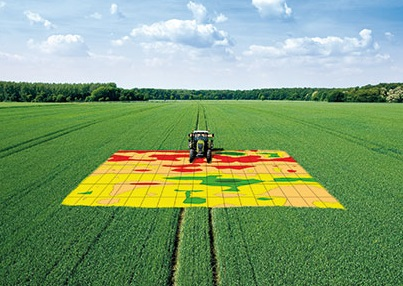

Software that provides the horticulturist with data in order to optimize its crops harvest and revenues. The data, such as temperature, wind, soil humidity, nutrient content, tractor speed when harvesting, etc. are already given by all sorts of machines but we want to combine all the data so that the horticulturist has a clear overview and can make better decisions on how to execute his processes.

The problem
- Lots of data is collected in the agricultural sector
- The data is not easy to understand, interpret and act upon
- Farmers are missing out on opportunities in terms of cost savings and strategic improvements
The solution
- Easy-to-understand tool
- Data from different machines
- Climatic data